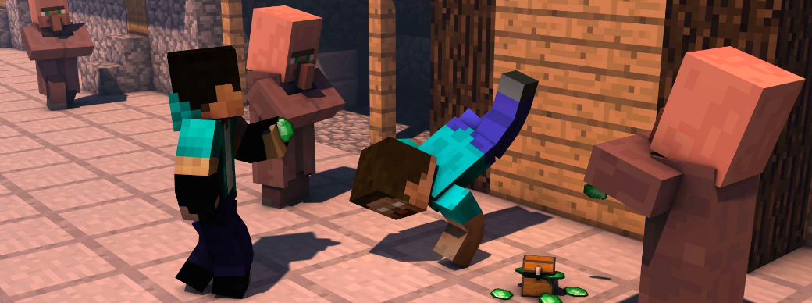

カルマ 「Karma」

カルマとは、ゲームにおいてプレイヤーに付与されていくポイントのようなものです。
このカルマを用いることで、新しいウェポンの購入ができるようになります。
獲得条件
基本的にプレイヤーをキルした人数がカルマとなって加算されます。
1回のゲームにつき最大15人でのマッチであるため、最大でも14キル分のカルマを得られます。
さらに、ゲームへの勝利でも獲得できます。
加算値について
・ゲームでのキル数
ひとりにつき、カルマが1付与されます。
最大14カルマ獲得可能。
・ゲームでの勝利
カルマが10付与されます。
引き分けのパターンもありますが、この場合にはカルマは付与されません。